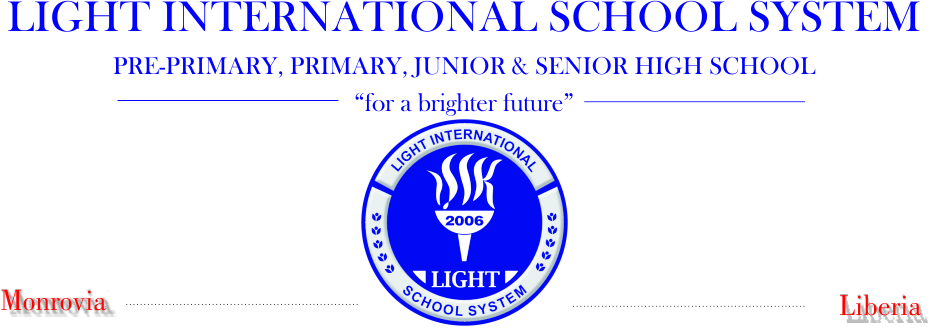

LIGHT INTERNATIONAL SCHOOL SYSTEM
24th Street Airfield Shortcut, Sinkor
Monrovia, Liberia
11. POLICY OF ADMISSION
Our school is proud to welcome children of all nationalities, race, and creed seeking to be inclusive. The school promotes equal opportunities for all by applying the regulations on admission fairly and equally to all wishing to attend. Our policy of admission is illustrated in the chart below:
| student age |
year |
LIberia,US Turkish System |
French system |
| 2 to 5 |
1 |
Pre-Primary |
Anne 3 |
| 6 |
2 |
Grade 1 |
CP |
| 7 |
3 |
Grade 2 |
CE-1 |
| 8 |
4 |
Grade 3 |
CE-2 |
| 9 |
5 |
Grade 4 |
CM 1 |
| 10 |
6 |
Grade 5 |
CM 2 |
| 11 |
7 |
Grade 6 |
6 eme |
| 12 |
8 |
Grade 7 |
5 eme |
| 13 |
9 |
Grade 8 |
4 eme |
| 14 |
10 |
Grade 9 |
3 eme |
| 15 |
11 |
Grade 10 |
2 eme |
| 16 |
12 |
Grade 11 |
1 eme |
| 17 |
13 |
Grade 12 |
Terminal |
OUR HISTORY
Light International School System (LISS) is an international school located in Monrovia, Liberia. The school was established in 2006 to provide quality Education, day and boarding Learning environment and facilities to children living in Liberia and children of foreign based families.
The school has three campuses, Pre-Primary, primary, Junior and Senior High section located Airfield Shortcut, Sinkor, Monrovia-Liberia. The School currently has students from over 13 different countries across the globe in attendance. The school is basically science-oriented with state of the art teaching and learning facilities.